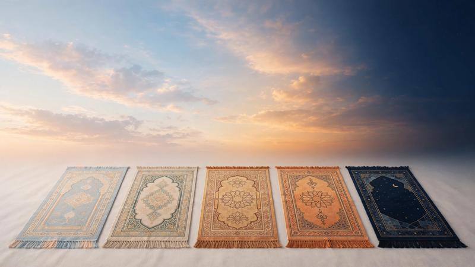

5 Daily Prayers in Islam: Names, Times & Rak'ahs

The five daily prayers are among the most important acts of worship in Islam. Muslims perform Fajr, Dhuhr, Asr, Maghrib and Isha at their appointed times every day. If you are new, start with our step-by-step guide to praying Salah.
What Are the Five Daily Prayers?
The five obligatory prayers are distributed throughout the day and night. Each prayer has a specific time and number of obligatory rak'ahs.
1. Fajr Prayer
Fajr is the dawn prayer. Its time begins at true dawn and ends before sunrise. The obligatory Fajr prayer consists of two rak'ahs. Learn how to pray Fajr step by step →
2. Dhuhr Prayer
Dhuhr is the midday prayer. Its time begins after the sun passes its zenith. It consists of four obligatory rak'ahs. Learn how to pray Dhuhr step by step →
3. Asr Prayer
Asr is the afternoon prayer. It consists of four obligatory rak'ahs, and its exact time depends on location and calculation method. Learn how to pray Asr step by step →
4. Maghrib Prayer
Maghrib begins immediately after sunset. It consists of three obligatory rak'ahs. Learn how to pray Maghrib step by step →
5. Isha Prayer
Isha is the night prayer. It consists of four obligatory rak'ahs and begins after twilight disappears. Learn how to pray Isha step by step →
How Long Does Prayer Take?
The length of Salah varies depending on the prayer, the recitation and the pace of the person praying. The important point is to perform the prayer calmly and correctly rather than rushing. Make sure you have valid wudu and meet the conditions of Salah before you begin, and avoid common Salah mistakes.
Learn More About Salah
📚 Salah Guides
- 🕌 Prayer in Islam: Complete Guide to Salah
- 📖 How to Pray Salah Step by Step
- 💧 How to Make Wudu Before Prayer
- 🗣️ What to Say in Salah